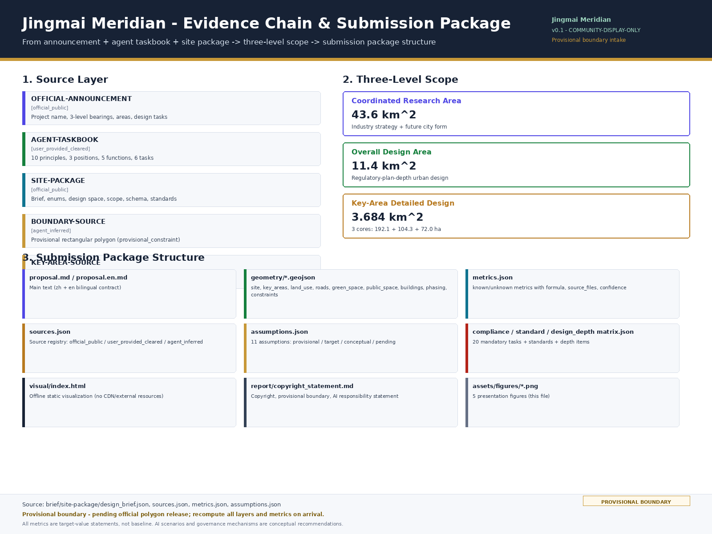
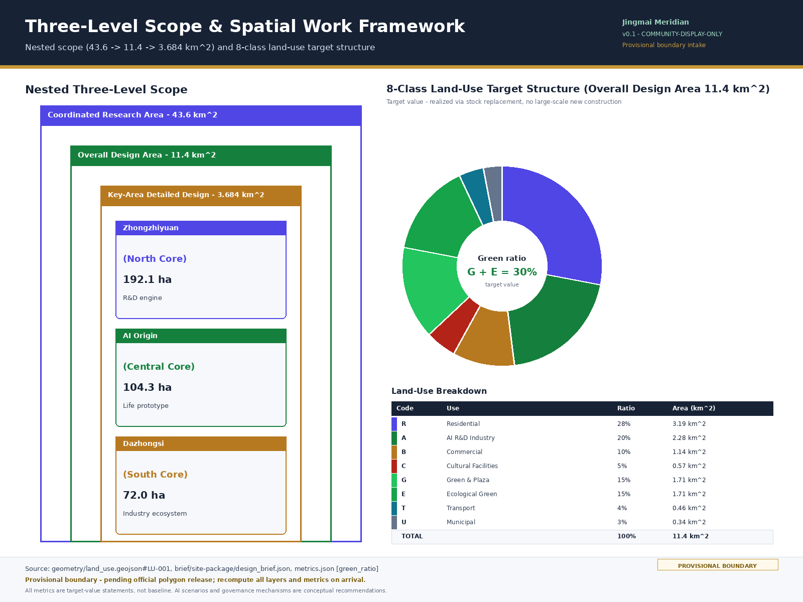
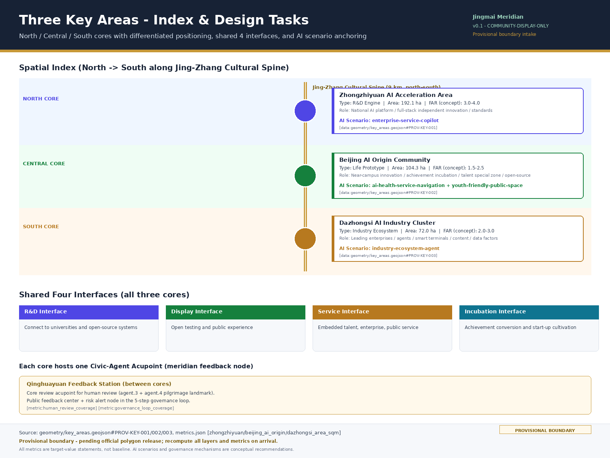
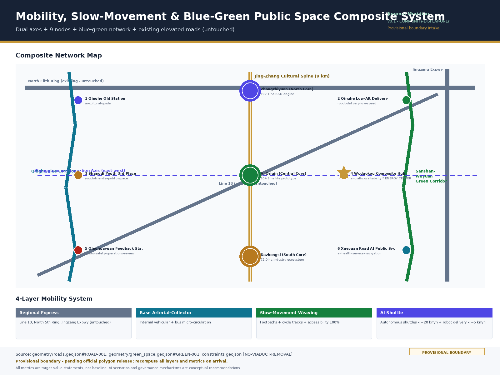
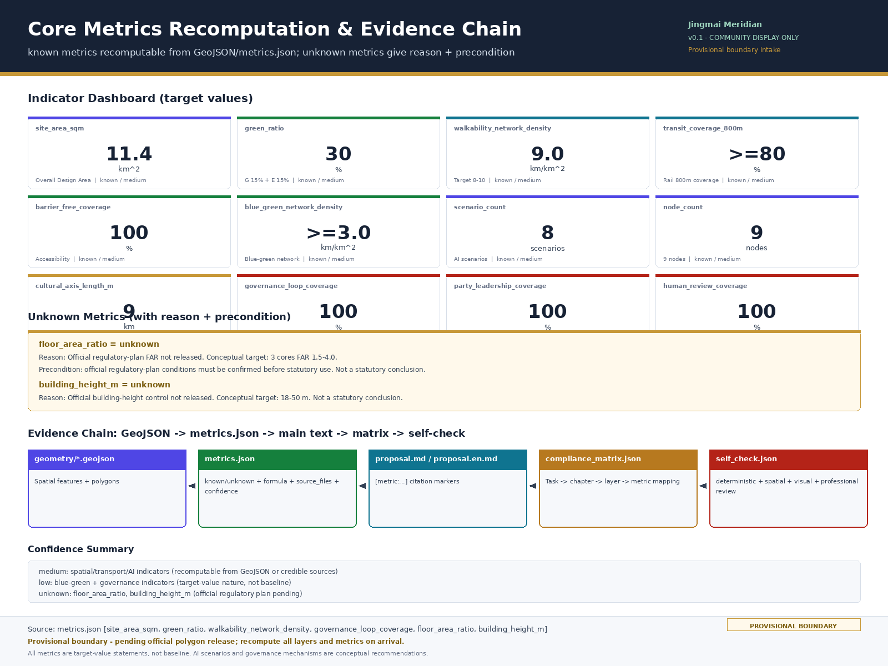

Jingmai Meridian — Urban Design for the Centennial Jing-Zhang AI Innovation Belt
Using the centennial Jing-Zhang self-reliance heritage as the meridian and the civic-agent governance loop as the network, this proposal builds a 'one-meridian, dual-axis, three-core, nine-node' spatial structure, integrating the 117-year self-reliance lineage (engineering→industrial→intelligent) with civic-agent co-governance in the Haidian innovation belt. Coordinated research area 43.6 km², overall design area 11.4 km², key detailed design area 3.684 km² (three cores: 192.1+104.3+72.0 ha).
Jingmai Meridian — Urban Design for the Centennial Jing-Zhang AI Innovation Belt
Design Basis and Source List
This proposal takes the Open Call for International Urban Design Schemes for the Centennial Jing-Zhang AI Innovation Belt as its primary basis, and treats the maintainer-registered design brief, agent taskbook, provisional boundaries and permitted design space inside brief/site-package/ as the machine-readable basis 来源 来源. Source layering follows three boundary classes: formal-ready material (announcement text boundary bearings, officially published areas, names and areas of the three key areas) can be used directly for proposal generation; background reference material (global AI innovation ecosystem cases, policy literature) is used for judgement and reference and does not enter official boundaries; provisional intake material (provisional rectangular polygons) serves only as a temporary constraint for proposal generation, self-check and visualization 来源.
Provisional boundary statement: the official precise-boundary polygon has not yet been released; both geometry/site_boundary.geojson and geometry/key_areas.geojson in the submission package are tagged provisional_constraint, official_boundary=false. Their coarse origin is the announcement text bearings together with the announced coordinated research area of 43.6 km², overall design area of 11.4 km², and the three key areas totaling 368.4 ha. The provisional boundary can only be used for proposal generation, self-check and visualization; it cannot serve as an official redline, approval basis, precise area basis, or statutory control conclusion. When the official precise-boundary polygon arrives, site boundary, key areas, land use, roads, green space, public space, buildings, phasing and metrics must all be recomputed [assumption:PROVISIONAL-BOUNDARY].
The proposal is not a stand-alone vision text; it organizes its outputs starting from the announcement, the agent taskbook and the site material. The full source registry, metrics, standards, design depth and task coverage are placed in sources.json, metrics.json, compliance_matrix.json, standard_matrix.json and design_depth_matrix.json, and are not duplicated as machine indexes in the main text. When readers enter the evidence from the main text, citation markers allow them to trace back to the structured files 空间数据 指标.

Three-Level Scope Framework
The proposal organizes work along the three levels defined by the announcement; the scope_id, area, boundary and design depth of each level are based on the official_scope_levels and key_areas registered in brief/site-package/design_brief.json 深度 空间数据 指标 指标 指标. The Coordinated Research Area of 43.6 km² (north to the North Fifth Ring Road, east to the Jingzang Expressway, south to Xizhimen Outer Street, west to Wanquanhe Road) addresses the AI industrial ecosystem, strategic positioning, innovation chain and future city form; the Overall Design Area of 11.4 km² (taking the urban districts and industrial districts 1–2 km around the Jing-Zhang Railway Heritage Park as the planning scope; north to the North Fifth Ring Road, east to Xueyuan Road and Xitucheng Road, south to Xizhimen Outer Street, west to Dazhongsi East Road and Heqing Road) addresses the overall urban-renewal framework, industrial spatial layout, transport and municipal support and urban character control; the Key-Area Detailed Design Area of 3.684 km² (368.4 ha, including from north to south the Zhongzhiyuan AI Independent Innovation Acceleration Area, the Beijing AI Origin Community, and the Dazhongsi AI Industry Cluster) addresses three detailed-design districts and requires explicit function and format, building scale, demolish–renovate–retain classification, public-space connectivity and transport organization.
| Level | scope_id | Area | Boundary text (per design_brief.json) | Design depth |
|---|---|---|---|---|
| Coordinated Research Area | coordinated_research_area | 43.6 km² (43,600,000 m²) | North to North Fifth Ring Road, east to Jingzang Expressway, south to Xizhimen Outer Street, west to Wanquanhe Road | Industry strategy research: AI industrial ecosystem, innovation chain and future city form judgement |
| Overall Design Area | overall_design_area | 11.4 km² (11,400,000 m²) | Planning scope covers the urban districts and industrial districts 1–2 km around the Jing-Zhang Railway Heritage Park; north to North Fifth Ring Road, east to Xueyuan Road and Xitucheng Road, south to Xizhimen Outer Street, west to Dazhongsi East Road and Heqing Road | Regulatory-plan-depth urban design: land use, buildings, roads, green space, public space and phasing layers |
| Key-Area Detailed Design Area | key_detailed_design_area | 3.684 km² (368.4 ha, sum of three cores) | From north to south: Zhongzhiyuan AI Independent Innovation Acceleration Area, Beijing AI Origin Community, Dazhongsi AI Industry Cluster | Detailed design: function and format, building scale, demolish–renovate–retain, public-space connectivity, transport organization |
| └ Zhongzhiyuan AI Acceleration Area (North Core) | zhongzhiyuan_ai_acceleration_area | 192.1 ha (1,921,000 m²) | North core of the Key-Area Detailed Design Area, R&D engine type | Detailed design 指标 |
| └ AI Origin Community (Central Core) | beijing_ai_origin_community | 104.3 ha (1,043,000 m²) | Central core of the Key-Area Detailed Design Area, life prototype type | Detailed design 指标 |
| └ Dazhongsi AI Industry Cluster (South Core) | dazhongsi_ai_industry_cluster | 72.0 ha (720,000 m²) | South core of the Key-Area Detailed Design Area, industry ecosystem type | Detailed design 指标 |
Verification: 192.1 + 104.3 + 72.0 = 368.4 ha = 3.684 km², consistent with the key-area total registered in design_brief.json 指标.
The three-level work is not a fragmented collection of drawings. Coordinated research sets the industry-chain and city-form judgement; overall design translates that judgement into renewal projects, spatial structure and facility carrying capacity; key-area detailed design verifies the implementability of specific plots, buildings, transport, public space and AI scenarios. The "one-meridian, dual-axis, three-core, nine-node network" spatial structure of Jingmai Meridian is exactly the translation that takes the three levels from strategy, to control, to detailed design: the one meridian corresponds to the Jing-Zhang cultural spine of the Overall Design Area; the three cores correspond to the three key areas of the Key-Area Detailed Design Area; the nine nodes correspond to operable AI scenario nodes within the Overall Design Area 深度.
If provisional boundary is used, its limitations must be explicit: the boundary itself is a temporary rectangular constraint and must not serve as a redline, approval basis or precise area basis; after the official polygon replaces it, all layers and metrics must be recomputed. The current scorable state of the submission is provisional boundary, with a precision warning retained and recomputation pending formal data release; this does not block content scoring, but all spatial conclusions are written under the principle of "discussable, reviewable, and recomputable after the official boundary is replaced."

| Level | Design question | Proposal answer | Data anchor |
|---|---|---|---|
| Coordinated Research Area | How to organize the AI industrial ecosystem and future city form | Use the 117-year self-reliance lineage to string together the three-belt positioning, forming an innovation chain of university origination → open-source collaboration → enterprise conversion → public experience → international communication | compliance_matrix.json, standard_matrix.json |
| Overall Design Area | How to map industry space, urban renewal, transport/municipal and character | A one-meridian, dual-axis, three-core, nine-node network expressed jointly through land use, buildings, roads, green space, public space and phasing layers | 空间数据, 空间数据 |
| Key-Area Detailed Design Area | How to bring the three districts to detailed-design depth | Three cores with differentiated positioning and four shared interfaces, with separate sub-schemes for R&D engine, life prototype and industry ecosystem | 空间数据, 空间数据, 空间数据 |
Coordinated Research Area: Industry and Future City Strategy
The core design idea of the Coordinated Research Area is "Jing-Zhang as the meridian, self-reliance as the soul; intelligence as the network, co-governance as the body." The meridian is the 9 km cultural spine of the Jing-Zhang Railway Heritage Park, stringing together the three historical strata of 1909, 1988 and 2026; the soul is the 117-year self-reliance lineage (engineering self-reliance → industrial self-reliance → intelligent self-reliance), echoing the strategic depth of "high-level scientific and technological self-reliance and self-strengthening" under Party-building strengthening of the nation; the network is the civic-agent meridian, drawing on the Chinese systems-thinking paradigm of acupoint–meridian–organ, distinct from the Western central-hub Smart Nation; the body is a living city co-governed by multiple actors — Party-building guidance, government implementation, public participation 来源 标准.
The three-belt positioning translates the announcement's "Centennial Jing-Zhang Cultural Belt, Urban AI Life Experience Belt, AI Integration and Innovation Belt" into spatializable industry and city-form judgements: the Cultural Belt carries the display and experience of the 117-year narrative; the AI Life Experience Belt carries the talent community, youth friendliness and public-service scenarios; the AI Integration and Innovation Belt carries the R&D engine, industry ecosystem and full-stack independent innovation. The three belts correspond to the "three positions, five functions, three-zone and two-wing coordination loop" required by agent.1, and meet at Wudaokou through the "one meridian, dual axes" to form an energy center 空间数据 指标.
The naming scheme "Jingmai Meridian" — "Jing" refers to Jing-Zhang and Beijing, "Mai" to the cultural spine and the meridian, "Zhi" to artificial intelligence, "Luo" to the civic-agent meridian and the co-governance network; the English name Jingmai Meridian doubles as both a geographic meridian and an acupoint meridian. The logo design direction proposes an overlap of the characters "京" and "脉", overlaid with the dot imagery of acupoint nodes and the longitudinal axis of the 9 km cultural spine, forming an extensible visual identity direction; typography, imagery and trademarks must be cleared before finalization and must not use existing enterprise or institutional logos without authorization. Naming and logo direction respond to the agent.1 mandatory task 来源.
Summaries of five-to-eight global AI innovation ecosystem cases respond to the agent.2 mandatory task: London King's Cross renewed railway heritage into a knowledge-economy district, providing a reference for the reuse of the Jing-Zhang Railway Heritage Park; Barcelona 22@ converted an industrial district into an innovation district, providing a reference for stock replacement; Singapore One-North embedded a science park into urban life, providing a reference for the R&D–life interface; Beijing Shougang Park provides a local path for in-city industrial heritage transformation with a dual Winter Olympics and AI narrative; Shanghai Yangpu Riverside moved from industrial rust belt to life show belt, providing references for public participation and waterfront space; Shenzhen Nanshan Science City provides references for technology–industry–capital coordination; Hangzhou Yunqi Town provides references for small-town-style developer communities; Singapore Smart Nation provides a reference counterpart for central-hub governance, while Jingmai Meridian responds to its limitations through the meridian paradigm. These case lessons can be translated into three types of design actions: spatial (dual axes and multiple cores), operational (annual events and developer communities), and scenario mechanisms (open testing and pilgrimage routes) 来源 标准.
Overall Design Area: Urban Renewal and Regulatory-Plan Urban Design
The core spatial structure of the Overall Design Area is the "one-meridian, dual-axis, three-core, nine-node network." The one meridian is the Jing-Zhang cultural spine, 9 km north–south, stringing together the three anchors of Qinghe Old Station, Zhongguancun Origin and the AI Origin Community; the dual axes are the Jing-Zhang Cultural Vitality Axis (north–south) and the Zhongguancun Innovation Axis (east–west), intersecting at Wudaokou–Qinghuayuan to form an energy center; the three cores are the Zhongzhiyuan AI Acceleration Area, the Beijing AI Origin Community and the Dazhongsi AI Industry Cluster; the nine nodes are the three cores plus six scenario nodes (Qinghe Old Station cultural node, Qinghe low-altitude delivery pilot, Shangdi youth third place, Wudaokou composite hub, Qinghuayuan governance feedback station, Xueyuan Road AI public service). The nine nodes are connected through walking-and-cycling, green-space and AI shuttle networks, forming an operable, perceivable civic meridian 空间数据 深度 指标.
The overall urban-renewal framework is stock-replacement-led, with no large-scale new construction land. The principles are: retain the skeleton of the Jing-Zhang Railway Heritage Park and existing elevated roads (Line 13, North Fifth Ring, Jingzang Expressway), and do not alter the existing residential main body; renovate low-efficiency industrial space, idle commercial space and negative spaces under bridges, replacing them with AI R&D, cultural and public-service functions; demolish a small amount of illegal construction and setback space for public space and slow-movement weaving; new construction is limited to high-intensity R&D and cultural facilities within the three cores. Development intensity is expressed through differentiated conceptual FAR targets for the three cores: Zhongzhiyuan 3.0–4.0, AI Origin Community 1.5–2.5, Dazhongsi 2.0–3.0. These are conceptual target recommendations and can only become statutory judgements after official regulatory-plan conditions are confirmed [assumption:OFFICIAL-FAR-PENDING] [assumption:LAND-USE-TARGET-SCENARIO] 深度.
The overall design reaches the urban-design depth of regulatory detailed planning. geometry/land_use.geojson should fully cover the design boundary without overlap; geometry/buildings.geojson should express renewal building footprints or retained building footprints; geometry/roads.geojson should express micro-circulation, slow-movement and rail-transfer relationships; metrics.json recomputes core areas, ratios and layer counts 标准 深度. Contents involving building height, development intensity, road redline and setback line, where official control conditions are not yet available, are written as "pending confirmation of official regulatory-plan conditions" and must not pass off agent-inferred values as approved indicators. Material gaps concentrate on regulatory plans, existing buildings, ownership, municipal and heritage-protection conditions, and must be filled during the professional deepening phase [assumption:A-CONTROLS-001].
Key Area Detailed Design
The three key areas each take on a differentiated positioning and share four interface commonalities: an R&D interface (connecting to universities and open-source systems), a display interface (open testing and public experience), a service interface (embedded talent, enterprise and public service), and an incubation interface (achievement conversion and start-up cultivation); each also hosts one civic-agent acupoint as a meridian feedback node. The three cores jointly support the agent.4 tasks of AI public space, AI-native new formats and pilgrimage landmarks 空间数据 深度 指标.
Zhongzhiyuan AI Autonomous Innovation Acceleration Area (north core, 192.1 ha) is positioned as the R&D engine type, with a conceptual FAR target of 3.0–4.0. Organized around the national AI platform, full-stack independent innovation, standards setting, safety governance and industry display, it arranges R&D building clusters, a low-carbon computing center, a standards-and-governance exhibition hall and the Qinghe innovation interface. The demolish–renovate–retain strategy focuses on retaining existing Zhongguancun R&D main bodies, renovating low-efficiency parks, and adding landmark R&D towers and shared test fields. The AI scenario anchors enterprise-service-copilot (Enterprise Service Copilot), carrying the industry ecosystem agent and full-cycle enterprise services. The material gap is ownership and heritage-protection conditions 空间数据 指标.
AI Origin Community (104.3 ha) is positioned as the life prototype type, with a conceptual FAR target of 1.5–2.5. Organized around near-campus innovation, achievement incubation and conversion, talent special zones and the open-source system, it arranges campus–park–street slow-movement stitching, an open-source release hall, talent service stations and residential life support. The demolish–renovate–retain strategy focuses on retaining the residential main body, renovating ground floors into incubation and display, and adding a limited amount of talent apartments. The AI scenarios anchor ai-health-service-navigation (Health Service Navigation) and youth-friendly public space. This district responds to the agent.3 life prototype and experienceable scenario tasks 空间数据 指标.
Dazhongsi AI Industry Cluster (72.0 ha) is positioned as the industry ecosystem type, with a conceptual FAR target of 2.0–3.0. Organized around leading enterprises, agents, smart terminals, content consumption and data factors, it arranges an international roadshow parlor, a smart terminal display belt, four-quadrant pedestrian connectivity at Dazhongsi Station and public-realm renewal for key enterprises. The demolish–renovate–retain strategy focuses on renovating existing commercial space, integrating the four quadrants of the intersection, and adding a limited number of landmark business towers. The AI scenario anchors the non-registered extension scenario industry-ecosystem-agent (Industry Ecosystem Agent, an industry-side extension of enterprise-service-copilot), carrying the international roadshow and data-factor parlor 空间数据 指标. The three-core polygons are currently provisional, so related conclusions can only be taken as directional design [assumption:OFFICIAL-KEY-AREA-PENDING].

AI Innovation Ecosystem, Talent Profile, and AI+ Scenarios
The AI innovation ecosystem takes five user profiles as its demand-side basis: young talent (R&D, open source, social, night-time collaboration), incumbent residents (commuting, leisure, community services, low-disturbance renewal), visitors (cultural experience, industry tours, international roadshows), elderly and people with disabilities (accessibility, medical navigation, safety assistance), and incoming talent (landing services, children's education, cross-cultural social). Each profile corresponds to specific spatial responses and privacy boundaries, avoiding the use of resident profiles for commercial recommendation 来源 深度.
The 10 AI scenario cards consist of 6 registered scenarios, 2 non-registered scenario descriptions, and 2 extension scenarios, satisfying the brief's "more than 10 scenario cards" requirement 指标. The 6 registered scenarios are spatially anchored to the nine nodes: Qinghe Old Station — AI Cultural Guide (ai-cultural-guide, cultural-heritage AI guide, responding to agent.5 cultural narrative); Qinghe low-altitude delivery pilot — Low-Speed Robot Delivery (robot-delivery-low-speed, autonomous shuttle ≤20 km/h, robots ≤5 km/h, responding to agent.3 test scenarios); Wudaokou composite hub — AI Traffic and Walkability (ai-traffic-walkability, explainable wayfinding, low-intrusion sensing, slow-movement breakpoint identification); Qinghuayuan governance feedback station — Public Safety Operations Review (public-safety-operations-review, core review acupoint, responding to agent.4 pilgrimage landmark and agent.3 human review); Xueyuan Road AI public service — AI Health Service Navigation (ai-health-service-navigation, medical navigation, Enterprise Service Copilot composite); Zhongguancun AI Acceleration Area — Enterprise Service Copilot (enterprise-service-copilot, industry testing and validation scenario). The 2 non-registered scenario descriptions: Shangdi youth third place — Youth-Friendly Public Space (night-time collaboration, sport, social, an extension expression of track youth-friendly-public-space); Dazhongsi Industry Cluster — Industry Ecosystem Agent (industry testing and validation scenario, an industry-side extension of enterprise-service-copilot). The 2 extension scenarios are the Open-Source Release Hall (AI Origin Community) and the Data Factor Parlor (Dazhongsi). Of these, 3 are industry testing and validation scenarios: Enterprise Service Copilot, Industry Ecosystem Agent, and Low-Speed Robot Delivery 来源 指标 指标.
The civic-agent meridian five-step loop is the core governance-side mechanism: ① public data reading (exterior, ingested into the urban-governance knowledge base) → ② proposal inference (interior, agent-generated proposals) → ③ public feedback (exterior, feedback channels embedded in the nine nodes) → ④ human review (interior, Qinghuayuan feedback station as the core review acupoint) → ⑤ risk alerts (exterior, returning to the knowledge base) → loop. Three principles run throughout: Party-building guidance (value orientation, direction leadership, organizational assurance, professional gatekeeping, risk assessment, mass mobilization, technology ethics — all seven functions run through without any "non-intervention" link), government implementation (statutory decision-making and supervision), and public participation (feedback, supervision, co-construction). All governance mechanisms are conceptual recommendations and must follow statutory procedures in implementation [assumption:GOVERNANCE-CONCEPTUAL] 指标 指标.
| User profile | Typical needs | Spatial response | Privacy boundary |
|---|---|---|---|
| Young talent | R&D, open source, social, night-time collaboration | Origin Community open-source release hall, youth third place, night-time collaboration space | No collection of personal behavior traces; activity data used only for aggregate statistics |
| Incumbent residents | Commuting, leisure, community services, low-disturbance renewal | Jing-Zhang Heritage Park slow-movement loop, embedded community services, tiered activities | Resident profiles not used for commercial recommendation |
| Visitors | Cultural experience, industry tours, international roadshows | Qinghe Old Station cultural node, Dazhongsi international roadshow parlor | Visit data anonymized, not shared externally |
| Elderly and people with disabilities | Accessibility, medical navigation, safety assistance | Xueyuan Road AI public service, 100% accessibility coverage | Health data minimized and collected only with authorization |
| Incoming talent | Landing services, children's education, cross-cultural social | Talent service stations, AI Origin Community composite support | Personal identity information handled under PIPL compliance |
Land Use, Building Scale, and Retain/Renovate/Demolish/New-Build
The land-use layout is expressed following public standards for territorial-space survey, planning and use control classification, forming a complete, closed, seamless eight-class land-use target structure: R Residential 28% (3.19 km²), A AI R&D Industry 20% (2.28 km²), B Commercial Service 10% (1.14 km²), C Cultural Facilities 5% (0.57 km²), G Green and Plaza 15% (1.71 km²), E Ecological Green 15% (1.71 km²), T Transport Facilities 4% (0.46 km²), U Municipal Infrastructure 3% (0.34 km²), totaling 100% and 11.4 km² (Overall Design Area). The target green ratio (G + E) = 30% 指标; the current green_space.geojson layer contains only class G, so the spatially recomputed green ratio is about 20.98% 指标. All ratios are post-renewal target configurations, realized through stock replacement, with no large-scale new construction land 空间数据 深度 [assumption:LAND-USE-TARGET-SCENARIO].
The demolish–renovate–retain classification is retain-led: retain the skeleton of the Jing-Zhang Railway Heritage Park, the existing residential main body, heritage buildings and existing elevated roads; renovate low-efficiency industrial parks, idle commercial space, negative spaces under bridges, ground-floor frontages and some public buildings, replacing them with AI R&D, cultural, display and public-service functions; demolish a small amount of illegal construction, setback space and a few low-value shanties for public space and slow-movement weaving; new construction is limited to high-intensity R&D towers, cultural facilities and a limited number of talent apartments within the three cores. Building scale and development intensity are expressed through differentiated conceptual FAR targets for the three cores and can only become statutory judgements after official regulatory-plan conditions are confirmed 深度 [assumption:OFFICIAL-FAR-PENDING] 空间数据.
All areas, ratios and scales must be recomputable from geometry/*.geojson, metrics.json or credible sources. Currently metrics.json shows floor_area_ratio and building_height_m as unknown, because official regulatory-plan FAR and building-height controls have not yet been released. The proposal provides conceptual target recommendations (three-core FAR 1.5–4.0, building height 18–50 m) that are not statutory conclusions 指标 指标. Where regulatory plans, existing buildings, ownership or engineering conditions are missing, the relevant content must be written as pending items and must not be disguised as approved indicators [assumption:A-CONTROLS-001].
Traffic, Rail, Municipal, and Public Service Facilities
The traffic strategy is organized into four layers: a regional express layer (retaining existing Line 13, North Fifth Ring and Jingzang Expressway elevated roads unchanged, carrying through-traffic and external traffic), a base arterial-collector layer (organizing internal vehicular and bus micro-circulation), a slow-movement weaving layer (footpaths, cycle tracks, accessible networks), and an AI shuttle layer (low-speed autonomous shuttles ≤20 km/h and robot delivery ≤5 km/h). Target walking-and-cycling network density is 8–10 km/km², rail-station 800 m coverage ≥80%, and accessibility coverage 100% 深度 指标 指标 [assumption:TRANSPORT-TARGET-SCENARIO].
No-large-excavation statement: existing elevated roads (Line 13, North Fifth Ring, Jingzang Expressway) are left untouched, and the Boston Big Dig route is not pursued. Four stitching means are used to achieve east–west stitching and north–south through-connection: activation of the old Jing-Zhang ground corridor (the ground cultural spine stringing together the three anchors), use of spaces under elevated viaducts (as "acupoint" spatial resources, embedding public services, AI scenarios and rest nodes), three-dimensional crossing nodes (pedestrian bridges and underpasses at key locations such as Wudaokou and Qinghuayuan), and weaving of abandoned branch lines and alleyways (using abandoned Jing-Zhang branches and alleyways to weave the slow-movement network) [assumption:NO-VIADUCT-REMOVAL] 空间数据 空间数据.
The AI shuttle layer is the distinctive layer of Jingmai Meridian. Low-speed autonomous shuttles link the three cores and nine nodes, carrying last-mile connections and rail transfers; robot delivery handles low-speed delivery of parcels, food and industrial logistics, sharing right-of-way with the slow-movement network but limited to 5 km/h. This layer responds to the agent.3 task on AI-enabled scenario new paradigms. Municipal and public-service facilities cover AI industrial service facilities, innovation service platforms, talent life service facilities, new infrastructure, distributed energy, edge computing and the integration of traditional municipal facilities. Where pipeline, energy, drainage, flood-control or fire-fighting engineering data are missing, they are listed as preconditions for formal deepening 深度 深度.

Blue-Green Space, Public Space, and Urban Character
The blue-green space takes "one meridian, dual corridors" as its skeleton: the Jing-Zhang cultural spine (9 km north–south) + the Qinghe blue corridor + the Sanshan-Wuyuan green corridor. The one meridian strings together the three anchors (Qinghe Old Station, Zhongguancun Origin, AI Origin Community); the dual corridors carry the continuity of waterfront ecology and historical gardens respectively. The nine-garden node system corresponds one-to-one with the nine nodes: each node embeds one public-space node, forming a walkable, pauseable, experienceable sequence of public space. Target blue-green network density is ≥3 km/km², per-capita park green ≥15 m², and sponge-city compliance rate ≥70% 深度 空间数据 指标 [assumption:BLUE-GREEN-TARGET-SCENARIO].
The three anchors form the centennial self-reliance narrative line, responding to the agent.5 cultural narrative task: Qinghe Old Station (1909 engineering self-reliance, "statecraft for practical use", Zhan Tianyou self-built railway) — Zhongguancun Origin (1988 industrial self-reliance, "renewal upon renewal", science-and-technology national rejuvenation) — AI Origin Community (2026 intelligent self-reliance, "unity of heaven and humanity", human-machine collaboration). The three-culture fusion overlays Jing-Zhang railway history and culture, Zhongguancun innovation culture and the new AI culture in the spatial narrative: Jing-Zhang provides industrial heritage and the spirit of self-reliance, Zhongguancun provides innovation culture and the open-source spirit, and the new AI culture provides human-machine collaboration and open-source co-governance. The contemporary translation of Sanshan-Wuyuan garden wisdom is reflected in the application of borrowed scenery, opposite scenery, garden-in-garden and shifting-perspective techniques across the nine garden nodes 深度 指标.
Three AI pilgrimage landmarks respond to the agent.4 pilgrimage landmark task: Qinghe Old Station (cultural-heritage AI guide hub, the 1909 self-reliance narrative starting point), AI Origin Community (life prototype and open-source release hall, the 2026 intelligent self-reliance narrative landing point), and Qinghuayuan Feedback Station (core review acupoint and public feedback center, the governance pilgrimage landmark). Landmarks, wayfinding, logo, typography, imagery, and personal and corporate marks must be cleared, must not be over-entertained, and conceptual landmarks must not be written as approved for construction. Urban character is coordinated through three element types — the Jing-Zhang industrial-heritage baseline, the Zhongguancun innovation interface, and AI-era digital public art; building height, massing, interface and roof form are governed by the character-control depth item 深度 标准.
Renewal Project List, Policies, and Phasing
The four-phase phasing responds to the agent.6 long-term operation task. Phase 1 (0–2 years) pilot period: Qinghuayuan Feedback Station + Qinghe low-altitude delivery pilot + old Jing-Zhang corridor demonstration segment, launching through lightweight facilities, operational activities and service platforms to validate the meridian five-step loop and AI scenario mechanisms. Phase 2 (2–5 years) three-core period: the three cores take differentiated shape, with Zhongzhiyuan R&D engine, AI Origin Community life prototype and Dazhongsi industry cluster forming and interlocking. Phase 3 (5–8 years) nine-node period: the nine nodes interlink, the meridian is through-connected, and AI scenarios move from pilot to routine operation. Phase 4 (after 8 years) evolution period: the civic agent self-learns and self-evolves, and the urban-governance knowledge base settles into a long-term brand asset 空间数据 深度 指标 [assumption:PHASING-CONCEPTUAL].
The renewal project list covers five categories: public space, transport, industry, new infrastructure, and operations. Typical projects include: JZ-01 Jing-Zhang Heritage Park slow-movement breakpoint stitching (public space/transport); JZ-02 Zhongzhiyuan Qinghe innovation interface (blue-green/industry display); JZ-03 Origin Community near-campus achievement conversion street (urban renewal/industry service); JZ-04 Dazhongsi Station four-quadrant pedestrian connectivity (rail integration/slow-movement); JZ-05 Qinghuayuan governance feedback station (new infrastructure/public service); JZ-06 Qinghe low-altitude delivery pilot (new infrastructure/AI scenario); JZ-07 Global AI Activity Week public route (operations/brand). Each project specifies location, type, dependencies, implementation phase and risks 深度.
The three principles of Party-building guidance, government implementation and public participation run through the whole implementation process. Party-building guidance acts on seven functions — value orientation, direction leadership, organizational assurance, professional gatekeeping, risk assessment, mass mobilization and technology ethics — without any "non-intervention" link; government implementation carries statutory decision-making and supervision; public participation is realized through feedback channels embedded in the nine nodes, community councils and open scenario days. The annual event system includes the Global AI Innovation Week, the Open-Source Developer Conference, the Jing-Zhang Cultural Year series, and quarterly open days at the three cores; long-term operation settles into a long-term brand asset through developer-community operations, scenario open operations, public-experience routes, international communication, and investment-and-conversion mechanisms. All events, investment, funding, policy and operational arrangements must be written as conceptual recommendations or deepening directions, and must not be presented as determined government arrangements 来源 [assumption:GOVERNANCE-CONCEPTUAL] 指标.
Indicators, Area Recomputation, and Compliance Matrix
The indicator system is divided into four categories: spatial, transport, AI and governance. Spatial: Overall Design Area 11.4 km² (Coordinated Research Area 43.6 km², Key-Area Detailed Design Area 3.684 km²), cultural spine 9 km, target green ratio 30% (G+E) 指标, per-capita park ≥15 m², three cores totaling 368.4 ha (Zhongzhiyuan 192.1 ha, AI Origin Community 104.3 ha, Dazhongsi 72.0 ha). Transport: slow-movement density 8–10 km/km², transit coverage ≥80%, accessibility 100%, blue-green network density ≥3 km/km². AI: 10 scenario cards (8 spatially anchored scenarios + 2 extension scenarios) 指标, nine nodes, meridian connectivity 100%. Governance: Party-building guidance coverage 100%, human review 100%, public participation channels ≥9 指标 指标 指标 指标.
Area recomputation follows the unified design-depth requirements 深度. Known indicators must be recomputable from GeoJSON or credible sources: site_area_sqm has an announced value of 11.4 km² and a polygon-calculated value of 11425715.145 m²; target_green_ratio targets 30% (G 15% + E 15%), while green_ratio is spatially recomputed at 20.98% (the green_space layer contains only class G) 指标; building_footprint_area_sqm is 111954.441 m²; public_space_area_sqm is 87054.545 m² 指标. Unknown indicators must give the reason and the precondition for formal submission: floor_area_ratio and building_height_m are unknown because the official regulatory plan has not been released, and the proposal gives only conceptual target recommendations 指标 指标 指标. Most known indicators have medium confidence; blue-green and governance indicators have low confidence because of their target-value nature.

The compliance matrix is the master file for task responsiveness. compliance_matrix.json covers 23 mandatory tasks (17 from announcement sections 1.3.1–1.5.3.3 plus 6 from agent.1–agent.6), each mapped to report chapters, layers, metrics, drawings, HTML pages, sources, assumptions and self-check items. standard_matrix.json covers the MOHURD Urban Design Measures, the Regulatory Detailed Planning code, the territorial-space use-control classification, the Generative AI Service Management Measures, the Barrier-Free Environment Construction Law, the Three Zones and Two Wings policy, and the Haidian 1×1 policy. design_depth_matrix.json covers depth items for the three-level scope framework, overall spatial structure, land-use layout, development intensity, retain–renovate–demolish, transport/rail/slow-movement/parking, municipal new infrastructure, blue-green public space, cultural-heritage narrative, renewal project list, phased implementation, risk and missing data, and metrics recomputation. The three matrices together ensure the proposal omits no task, oversteps no boundary, and lacks no depth. All indicators are target-value statements and must follow statutory procedures in implementation [assumption:GOVERNANCE-CONCEPTUAL] [assumption:AI-SCENARIO-CONCEPTUAL].
Risk, Copyright, and Legal/Official-Claim Boundaries
Source legality is the primary risk. This proposal uses only public or cleared material: announcement text bearings, officially published areas, names and areas of the three key areas, public policy literature, and public reporting on global AI innovation ecosystem cases. Non-public material is excluded: no secret maps, non-public tables, internal regulatory plans, personal privacy data, or uncleared internal enterprise data are used. If OSM is used as a base layer, attribution follows ODbL; commercial map tiles are not used as submission data 来源 来源.
Privacy protection follows the Personal Information Protection Law (PIPL) and the Interim Measures for the Management of Generative AI Services. In AI scenarios, personal behavior traces are not collected, activity data is used only for aggregate statistics, health data is minimized and collected only with authorization, resident profiles are not used for commercial recommendation, and visit data is anonymized. AI generation responsibility is borne by the agent: the proposal is responsible for facts, sources, copyright, spatial data, metrics and expression; the maintainer and professional reviewers may request rework or reject based on self-check results, spatial review and compliance-matrix requirements. AI scenarios are conceptual recommendations, not implemented, and must go through safety assessment, filing and statutory procedures before deployment [assumption:AI-SCENARIO-CONCEPTUAL] [assumption:GOVERNANCE-CONCEPTUAL].
Official approval/implementation commitment prohibition: the proposal does not claim official approval, approved regulatory plans, final land ownership, final construction scale, or guaranteed implementation. All spatial landing recommendations are expressed as "conceptual recommendations," "reference schemes," or "for professional-team deepening study." Pending-data checklist: official precise-boundary polygon, official polygons for the three key areas, regulatory-plan FAR and building height, road redlines, plot ownership, municipal pipelines, heritage-protection conditions, and existing-building basemaps. The full copyright and compliance statement is kept in report/copyright_statement.md [assumption:PROVISIONAL-BOUNDARY] [assumption:OFFICIAL-KEY-AREA-PENDING] [assumption:NO-VIADUCT-REMOVAL] [assumption:A-CONTROLS-001].
References
- Beijing Municipal Planning and Natural Resources Commission, Haidian Branch. Open Call for International Urban Design Schemes for the Centennial Jing-Zhang AI Innovation Belt — Prequalification Announcement.
- Centennial Jing-Zhang AI Innovation Belt Urban Design Open Call Taskbook excerpts (agent_taskbook.json).
- Haidian District "Three Zones and Two Wings" policy and the Haidian 1×1 coordination mechanism public documents.
- Ministry of Housing and Urban-Rural Development, Urban Design Management Measures and related technical codes for regulatory detailed planning.
- Ministry of Natural Resources, Guidelines for Territorial-Space Survey, Planning, Use Control and Land-Sea Use Classification.
- Public case materials on London King's Cross, Barcelona 22@, Singapore One-North and Smart Nation.
- Public case materials on Beijing Shougang Park, Shanghai Yangpu Riverside, Shenzhen Nanshan Science City, and Hangzhou Yunqi Town.
- Interim Measures for the Management of Generative AI Services and the Personal Information Protection Law.
- Public historical materials on the Jing-Zhang Railway and Zhan Tianyou's engineering self-reliance.
- Public conservation planning and research literature for the Sanshan-Wuyuan historic and cultural protected area.
- Full machine indexes: see
sources.json,metrics.json,compliance_matrix.json,standard_matrix.json, anddesign_depth_matrix.json.